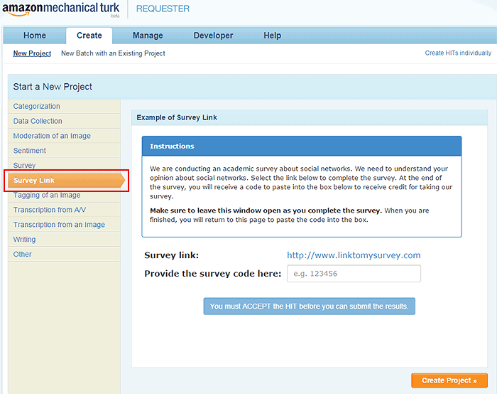
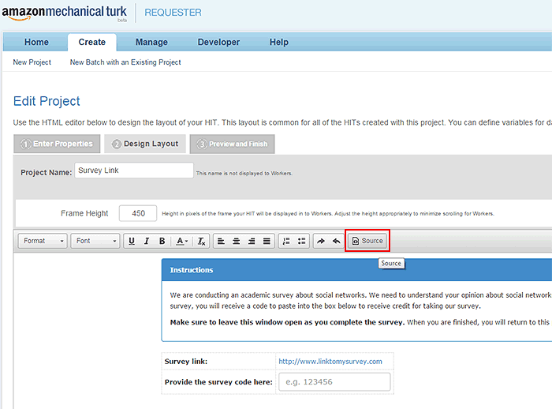
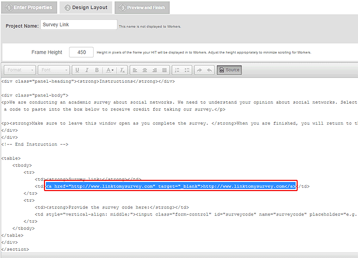
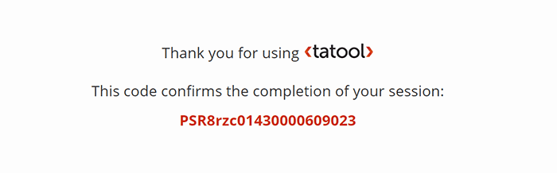
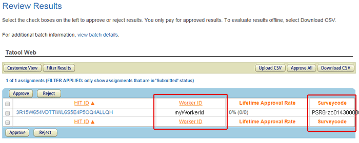
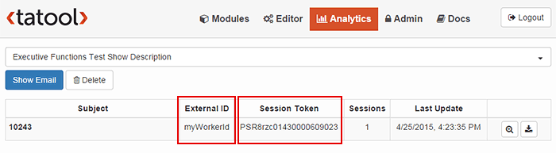

Tatool Web supports the use of Amazon Mechanical Turk (Mturk) for your experiments. To setup a HIT on Amazon Mturk, you have to publish your module in Tatool Web as a public or private module which allows access without a Tatool Web account. Get your module's URL by clicking on the Show URL link next to the Publish button and note it for later. Remember that your experiment has to conform to the Mturk Policies.
Once you have an Mturk requester account, you can go ahead and create a new project. Choose the predefined Survey Link layout as a starting point.

Create a project of type Survey Link
After you have entered all required properties, you can go ahead and edit the layout and add/change the text as required. As a final step, you need to replace the link to your survey/experiment by clicking on the Source button in the editor pane.

Edit Layout Source
Find the link definition highlighted in the screenshot below, and replace it with the complete code snippet from below. Remember to substitute the link at the beginning of the code snippet with your personal module URL.

Replace link with code
Replace the link with the following code, and substitute the value for the variable tatoolLink with the module URL. You can retrieve your module's URL by clicking on the Show URL link next to the Publish button in the Modules tab.
<!-- Replace the value for tatoolLink with your Tatool Web URL (without the extid) -->
<script type="text/javascript" language="JavaScript">
var tatoolLink = "http://www.tatool-web.com/#/public/xxxxx";
</script>
<!-- No changes needed below this line -->
<div id="linkElement">
<b>To perform this HIT, you must have Javascript and cookies enabled.
</div>
<script type="text/javascript" language="JavaScript">
<!--
var linkElement = document.getElementById('linkElement');
var queryString = window.location.search.substring(1);
var queryPairs = queryString.split("&");
var workerId = "";
for (i in queryPairs) {
var pair = queryPairs[i].split("=");
if (pair[0] == "workerId")
workerId = pair[1];
}
if (workerId == "" ) {
linkElement.innerHTML = '<b>The link will be displayed once the HIT has been accepted.</b>';
} else {
linkElement.innerHTML = '<a target="_blank" href="' + tatoolLink + '?extid=' + workerId + '"><h2><b>Start Experiment!</b></h2></a>';
}
// -->
</script>
Once an Mturk worker has accepted and completed your module, Tatool Web will automatically provide a unique session code that the Mturk worker can submit as part of your HIT; there's no need for you to add anything to your module.

Tatool Web Completion Screen
To approve/reject payments to your Mturk workers, you can simply compare the Mturk Results and the Tatool Web Analytics overview. Both screens provide the Worker ID (= External ID) and the Surveycode (= Session Token) to confirm a successful participation. You also have immediate access to the data, allowing you to do additional checks (number of trials or number of points), depending on the HIT requirements you set. Make sure to clearly state your requirements in the Mturk HIT.

Mturk Result Overview

Tatool Web Analytics